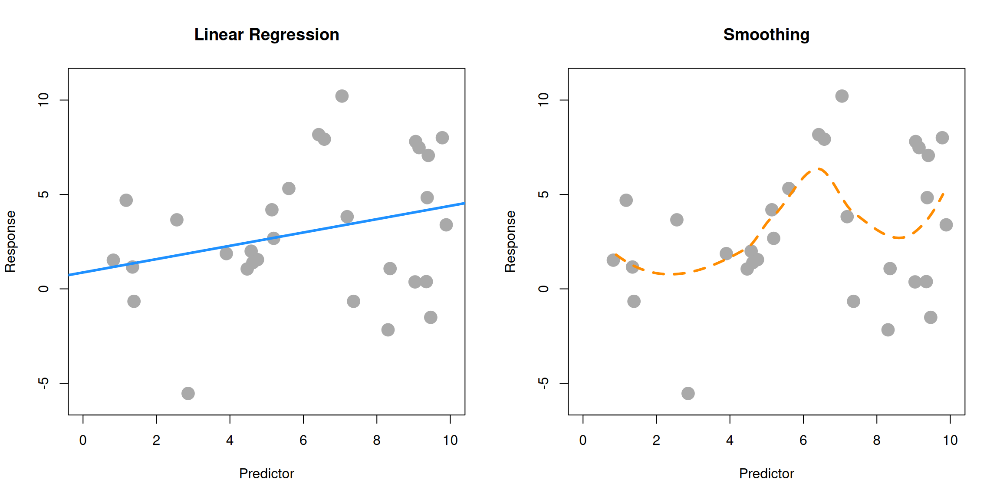
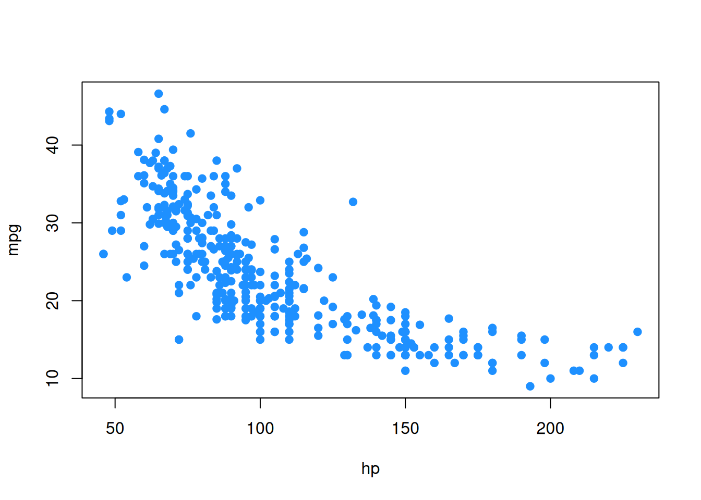
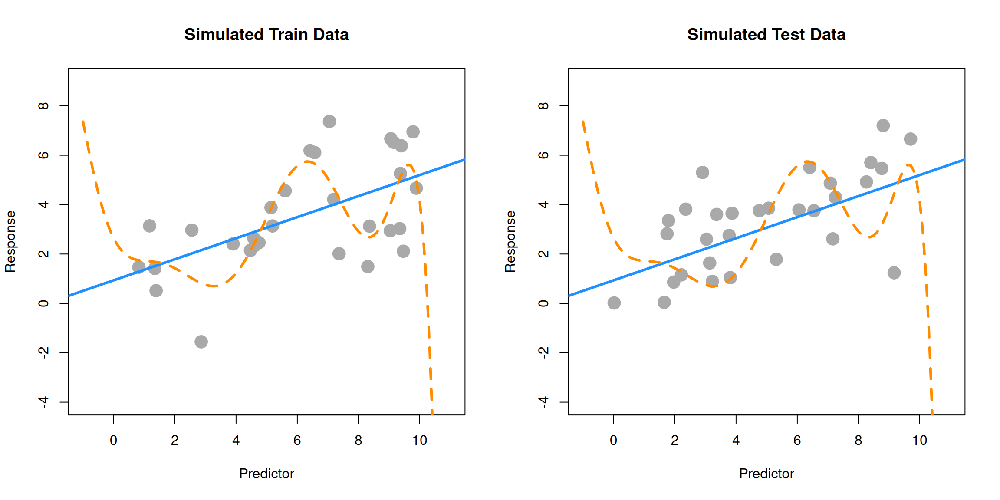

10 Model Building
“Statisticians, like artists, have the bad habit of falling in love with their models.”
— George Box
Let’s take a step back and consider the process of finding a model for data at a higher level. We are attempting to find a model for a response variable \(y\) based on a number of predictors \(x_1, x_2, x_3, \ldots, x_{p-1}\).
Essentially, we are trying to discover the functional relationship between \(y\) and the predictors. In the previous chapter we were fitting models for a car’s fuel efficiency (mpg) as a function of its attributes (wt, year, cyl, disp, hp, acc). We also consider \(y\) to be a function of some noise. Rarely if ever do we expect there to be an exact functional relationship between the predictors and the response.
\[ y = f(x_1, x_2, x_3, \ldots, x_{p-1}) + \epsilon \]
We can think of this as
\[ \text{response} = \text{signal} + \text{noise}. \]
We could consider all sorts of complicated functions for \(f\). You will likely encounter several ways of doing this in future machine learning courses. So far in this course we have focused on (multiple) linear regression. That is
\[ \begin{aligned} y &= f(x_1, x_2, x_3, \ldots, x_{p-1}) + \epsilon \\ &= \beta_0 + \beta_1 x_{1} + \beta_2 x_{2} + \cdots + \beta_{p-1} x_{p-1} + \epsilon \end{aligned} \]
In the big picture of possible models that we could fit to this data, this is a rather restrictive model. What do we mean by a restrictive model?
10.1 Family, Form, and Fit
When modeling data, there are a number of choices that need to be made.
- What family of models will be considered?
- What form of the model will be used?
- How will the model be fit?
Let’s work backwards and discuss each of these.
Fit
Consider one of the simplest models we could fit to data, simple linear regression.
\[ y = f(x_1, x_2, x_3, \ldots, x_{p-1}) + \epsilon = \beta_0 + \beta_1 x_{1} + \epsilon \]
So here, despite having multiple predictors, we chose to use only one. How is this model fit? We will almost exclusively use the method of least squares, but recall, we had seen alternative methods of fitting this model.
\[ \underset{\beta_0, \beta_1}{\mathrm{argmin}} \max|y_i - (\beta_0 + \beta_1 x_i)| \]
\[ \underset{\beta_0, \beta_1}{\mathrm{argmin}} \sum_{i = 1}^{n}|y_i - (\beta_0 + \beta_1 x_i)| \]
\[ \underset{\beta_0, \beta_1}{\mathrm{argmin}} \sum_{i = 1}^{n}(y_i - (\beta_0 + \beta_1 x_i))^2 \]
Any of these methods (we will always use the last, least squares) will obtain estimates of the unknown parameters \(\beta_0\) and \(\beta_1\). Since those are the only unknowns of the specified model, we have then fit the model. The fitted model is then
\[ \hat{y} = \hat{f}(x_1, x_2, x_3, \ldots, x_{p-1}) = \hat{\beta}_0 + \hat{\beta}_1 x_{1} \]
Note that, now we have dropped the term for the noise. We don’t make any effort to model the noise, only the signal.
Form
What are the different forms a model could take? Currently, for the linear models we have considered, the only method for altering the form of the model is to control the predictors used. For example, one form of the multiple linear regression model is simple linear regression.
\[ y = f(x_1, x_2, x_3, \ldots, x_{p-1}) + \epsilon = \beta_0 + \beta_1 x_{1} + \epsilon \]
We could also consider a SLR model with a different predictor, thus altering the form of the model.
\[ y = f(x_1, x_2, x_3, \ldots, x_{p-1}) + \epsilon = \beta_0 + \beta_2 x_{2} + \epsilon \]
Often, we’ll use multiple predictors in our model. Very often, we will at least try a model with all possible predictors.
\[ \begin{aligned} y &= f(x_1, x_2, x_3, \ldots, x_{p-1}) + \epsilon \\ &= \beta_0 + \beta_1 x_{1} + \beta_2 x_{2} + \cdots + \beta_{p-1} x_{p-1} + \epsilon \end{aligned} \]
We could also use some, but not all of the predictors.
\[ \begin{aligned} y &= f(x_1, x_2, x_3, \ldots, x_{p-1}) + \epsilon \\ &= \beta_0 + \beta_1 x_{1} + \beta_3 x_{3} + \beta_5 x_{5} + \epsilon \end{aligned} \]
These forms are restrictive in two senses. First, they only allow for linear relationships between the response and the predictors. This seems like an obvious restriction of linear models, but in fact, we will soon see how to use linear models for non-linear relationships. (It will involve transforming variables.) Second, how one variable affects the response is the same for any values of the other predictors. Soon we will see how to create models where the effect of \(x_{1}\) can be different for different values of \(x_{2}\). We will discuss the concept of interaction.
Family
A family of models is a broader grouping of many possible forms of a model. For example, above we saw several forms of models from the family of linear models. We will only ever concern ourselves with linear models, which model a response as a linear combination of predictors. There are certainly other families of models.
For example, there are several families of non-parametric regression. Smoothing is a broad family of models. As are regression trees.
In linear regression, we specified models with parameters, \(\beta_j\) and fit the model by finding the best values of these parameters. This is a parametric approach. A non-parametric approach skips the step of specifying a model with parameters, and is often described as more of an algorithm. Non-parametric models are often used in machine learning.
Here, SLR (parametric) is used on the left, while smoothing (non-parametric) is used on the right. SLR finds the best slope and intercept. Smoothing produces the fitted \(y\) value at a particular \(x\) value by considering the \(y\) values of the data in a neighborhood of the \(x\) value considered. (Local smoothing.)
Why the focus on linear models? Two big reasons:
- Linear models are the go-to model. Linear models have been around for a long time, and are computationally easy. A linear model may not be the final model you use, but often, it should be the first model you try.
- The ideas behind linear models can be easily transferred to other modeling techniques.
Assumed Model, Fitted Model
When searching for a model, we often need to make assumptions. These assumptions are codified in the family and form of the model. For example
\[ y = \beta_0 + \beta_1 x_{1} + \beta_3 x_{3} + \beta_5 x_{5} + \epsilon \]
assumes that \(y\) is a linear combination of \(x_{1}\), \(x_{3}\), and \(x_{5}\) as well as some noise. This assumes that the effect of \(x_{1}\) on \(y\) is \(\beta_1\), which is the same for all values of \(x_{3}\) and \(x_{5}\). That is, we are using the family of linear models with a particular form.
Suppose we then fit this model to some data and obtain the fitted model. For example, in R we would use
fit <- lm(y ~ x1 + x3 + x5, data = some_data)This is R’s way of saying the family is linear and specifying the form from above. An additive model with the specified predictors as well as an intercept. We then obtain
\[ \hat{y} = 1.5 + 0.9 x_{1} + 1.1 x_{3} + 2.3 x_{5}. \]
This is our best guess for the function \(f\) in
\[ y = f(x_1, x_2, x_3, \ldots, x_{p-1}) + \epsilon \]
for the assumed family and form. Fitting a model only gives us the best fit for the family and form that we specify. So the natural question is; how do we choose the correct family and form? We’ll focus on form since we are focusing on the family of linear models.
10.2 Explanation versus Prediction
What is the purpose of fitting a model to data? Usually it is to accomplish one of two goals. We can use a model to explain the relationship between the response and the predictors. Models can also be used to predict the response based on the predictors. Often, a good model will do both, but we’ll discuss both goals separately since the processes of finding models for explaining and predicting have some differences.
For our purposes, since we are only considering linear models, searching for a good model is essentially searching for a good form of a model.
Explanation
If the goal of a model is to explain the relationship between the response and the predictors, we are looking for a model that is small and interpretable, but still fits the data well. When discussing linear models, the size of a model is essentially the number of \(\beta\) parameters used.
Suppose we would like to find a model that explains fuel efficiency (mpg) based on a car’s attributes (wt, year, cyl, disp, hp, acc). Perhaps we are a car manufacturer trying to engineer a fuel-efficient vehicle. If this is the case, we are interested in both which predictor variables are useful for explaining the car’s fuel efficiency, as well as how those variables affect fuel efficiency. By understanding this relationship, we can use this knowledge to our advantage when designing a car.
To explain a relationship, we are interested in keeping models as small as possible, since smaller models are easy to interpret. The fewer predictors the fewer considerations we need to make in our design process.
Note that linear models of any size are rather interpretable to begin with. Later in your data analysis careers, you will see more complicated models that may fit data better, but are much harder, if not impossible to interpret. These models aren’t nearly as useful for explaining a relationship. This is another reason to always attempt a linear model. If it fits as well as more complicated methods, it will be the easiest to understand.
To find small and interpretable models, we will eventually use selection procedures, which search among many possible forms of a model. For now we will do this in a more ad-hoc manner using inference techniques we have already encountered. To use inference as we have seen it, we need an additional assumption in addition to the family and form of the model.
\[ y = \beta_0 + \beta_1 x_{1} + \beta_3 x_{3} + \beta_5 x_{5} + \epsilon \]
Our additional assumption is about the error term.
\[ \epsilon \sim N(0, \sigma^2) \]
This assumption that the errors are normally distributed with some common variance is the key to all of the inference we have done so far. We will discuss this in great detail later.
So with our inference tools (ANOVA and \(t\)-test) we have two potential strategies. Start with a very small model (no predictors) and attempt to add predictors. Or, start with a big model (all predictors) and attempt to remove predictors.
Correlation and Causation
A word of caution when using a model to explain a relationship. There are two terms often used to describe a relationship between two variables: causation and correlation. Correlation is often also referred to as association.
Just because two variables are correlated does not necessarily mean that one causes the other. For example, consider modeling mpg as only a function of hp.
plot(mpg ~ hp, data = autompg, col = "dodgerblue", pch = 20, cex = 1.5)
Does an increase in horsepower cause a drop in fuel efficiency? Or, perhaps the causality is reversed and an increase in fuel efficiency causes a decrease in horsepower. Or, perhaps there is a third variable that explains both!
The issue here is that we have observational data. With observational data, we can only detect associations. To speak with confidence about causality, we would need to run experiments. Often, this decision is made for us, before we ever see data, so we can only modify our interpretation.
This is a concept that you should encounter often in your statistics education. For some further reading, and some related fallacies, see: Wikipedia: Correlation does not imply causation.
We’ll discuss this further when we discuss experimental design and traditional ANOVA techniques. (All of which has recently been re-branded as A/B testing.)
Prediction
If the goal of a model is to predict the response, then the only consideration is how well the model fits the data. For this, we will need a metric. In regression problems, this is most often RMSE.
\[ \text{RMSE}(\text{model, data}) = \sqrt{\frac{1}{n} \sum_{i = 1}^{n}(y_i - \hat{y}_i)^2} \]
where
- \(y_i\) are the actual values of the response for the given data
- \(\hat{y}_i\) are the predicted values using the fitted model and the predictors from the data
Correlation and causation are not an issue here. If a predictor is correlated with the response, it is useful for prediction. For example, in elementary school aged children their shoe size certainly doesn’t cause them to read at a higher level, however we could very easily use shoe size to make a prediction about a child’s reading ability. The larger their shoe size, the better they read. There’s a lurking variable here though, their age! (Don’t send your kids to school with size 14 shoes, it won’t make them read better!)
Also, since we are not performing inference, the extra assumption about the errors is not needed. The only thing we care about is how close the fitted model is to the data. Least squares is least squares. For a specified model, it will find the values of the parameters which will minimize the squared error loss. Your results might be largely uninterpretable and useless for inference, but for prediction none of that matters.
Suppose instead of the manufacturer who would like to build a car, we are a consumer who wishes to purchase a new car. However this particular car is so new, it has not been rigorously tested, so we are unsure of what fuel efficiency to expect. (And, as skeptics, we don’t trust what the manufacturer is telling us.) In this case, we would like to use the model to help predict the fuel efficiency of this car based on its attributes, which are the predictors of the model. The smaller the errors the model makes, the more confident we are in its prediction.
Test-Train Split
The trouble with using RMSE to identify how well a model fits data is that RMSE is always (equal or) lower for a larger model. This would suggest that we should always use the largest model possible when looking for a model that predicts well. The problem with this is the potential to overfit to the data. So, we want a model that fits well, but does not overfit. To understand overfitting, we need to think about applying a model to seen and unseen data.
Suppose we fit a model using all data available and we evaluate RMSE on this fitted model and all of the seen data. We will call this data the training data, and this RMSE the train RMSE.
Now, suppose we magically encounter some additional data. To truly assess how well the model predicts, we should evaluate how well our model predicts the response of this data. We will call this data the test data and this RMSE the test RMSE.
- Train RMSE: model fit on seen data, evaluated on seen data
- Test RMSE: model fit on seen data, evaluated on unseen data
Below, we simulate some data and fit two models. We will call the solid blue line the “simple” model. The dashed orange line will be called the “complex” model, which was fit with methods we do not yet know.

The left panel shows the data that was used to fit the two models. Clearly the “complex” model fits the data much better. The right panel shows additional data that was simulated in the same manner as the original data. Here we see that the “simple” model fits much better. The dashed orange line almost seems random.
| Model | Train RMSE | Test RMSE |
|---|---|---|
| Simple | 1.71 | 1.45 |
| Complex | 1.41 | 2.07 |
The more “complex,” wiggly, model fits the training data much better as it has a much lower train RMSE. However, we see that the “simple” model fits the test data much better, with a much lower test RMSE. This means that the complex model has overfit to the data, and we prefer the simple model. When choosing a model for prediction, we prefer a model that predicts unseen data.
In practice, you can’t simply generate more data to evaluate your models. Instead we split existing data into data used to fit the model (train) and data used to evaluate the model (test). Never fit a model with test data.
10.3 Summary
Models can be used to explain relationships and predict observations.
When using model to,
- explain; we prefer small and interpretable models.
- predict; we prefer models that make the smallest errors possible, without overfitting.
Linear models can accomplish both these goals. Later, we will see that often a linear model that accomplishes one of these goals, usually accomplishes the other.